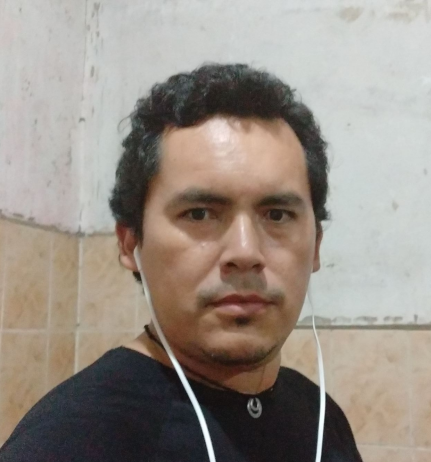

JOSUE GONZALES PEREZ

EMAIL: jgonzales@gmail.com
Trabajo en la empresa ENTEL SA, hace ya mas de 10 años.
Me especializo en redes IPNGN y Acceso movil.
Conocimiento de Electricidad Industrial y Automotriz
Manejo de Maquinaria Pesada
No tengo experiencia como desarrollador web, empesando a conocer Laravel, inicio en creación de CRUDs, bajo manejo de bases de datos y aun no desarrollo de aplicaciones web modernas.
Trabajo Actual Empresa Entel SA (2011 - a la fecha)
Trabaje como tecnico en el area de Datos, manejado la red IPNGN y la red de ACCESO en diferentes empresas de Seervicios.
Trabaje en empresas de servicios petroleros varios
Titulo de Ingenieria en Sistemas en la Universidad CUMBRE
Cursos CCNA en la Universidad UPSA
Curso de Electricidad Industrial en el instituto INFOCAL
Curso de IPv6 Avanzado en LACNIC
Curso de Curso de Avanzado en LACNIC
Curso de en el instituto INFOCAL